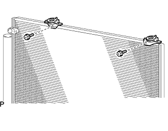
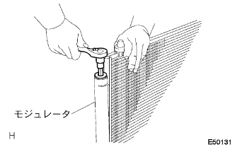
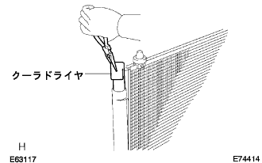

コンデンサASSY (ウィズ レシーバ) 分解 |
| 1. クーラ コンデンサ クッション NO.1取りはずし |
|  |
ボルト2本をはずし、クーラコンデンサクツシヨンNo.1 2個をコンデンサブラケツトカラーNo.1と一体で取りはずす。
クーラコンデンサクツシヨンNo.1をコンデンサブラケツトカラーNo.1から取りはずす。
| 2. クーラ ドライヤ取りはずし |
|  |
ストレートヘキサゴンレンチ14を使用して、キャップW/フイルターをモジユレータから取りはずす。
|  |
プライヤーを使用して、クーラドライヤを取りはずす。